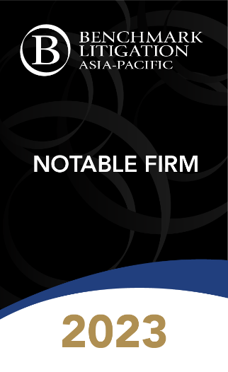

梁景威律師事務所是一所專業化的律師事務所，並在企業和商業領域內提供不同範疇的法律服務。我所擅長於國際航運、國際貿易、國際智慧財產權、以及企業重組和破產（清盤）的有關法律，在處理複雜的企業、商業和國際訴訟，國際商業和投資仲裁，以及企業重組活動上，我所擁有超過30年的豐富經驗。
通過代理案件Dickson Valora Group (Holdings) Company Limited v Fan Ji Qian ([2019] 2 HKLRD 123) 以及Dickson Holdings Enterprise Company Limited v Moravia CV ([2019] 3 HKLRD 210)，我司亦第一批應用了《關於內地與香港特別行政區法院就仲裁程序相互協助保全的安排》的律所之一。江蘇省連雲港市中級人民法院根據《互助安排》，成功協助香港國際仲裁中心在連雲港市完成了價值超過2000萬美元的跨境財產保全。
2001年，我所代表一家在中國浙江省溫州市的民企信泰光學告倒香港怡和系集團公司，成功向其追討其在無正本提單放貨的情況下民企所蒙受的貨物損失: 信泰光學(香港)有限公司-訴-怡和運輸中國有限公司 (判決收集在世界有名的勞埃德案例集 [2001] 年第二冊第678-690頁)。
2005年，我所代表一香港貨主告倒另一間國際有名的物流公司:昌鑽照相機有限公司-訴-普及物流有限公司 (判決收集在三本國際有名的案例集︰美國航運案例集 [2005] AMC 第2864 – 2879頁；歐洲運輸案倒集[2006]第XLI冊No.2 第182 – 195頁和香港案例集 [2005] 4HKC 第117 -135頁)。
我所的始創人梁景威律師，在1988年成為英國倫敦見習律師的同時獲頒發英國倫敦大學的法律碩士。同年，他回香港執業並在香港成為執業律師。在1992年，他獲得香港大學頒發的工商管理碩士。在香港回歸祖國中國之前和之後，他分別在1995年獲得中國政法大學頒發的國際法學士學位和2002年中國北京大學頒發的經濟法碩士學位。
梁景威律師是香港和星加坡仲裁司學會的資深會員，亦是香港國際仲裁中心和中國海事仲裁委員會的仲裁員名單內的仲裁員。
離岸法律服務 |
|||
 |
 | ||